1. ?뚰겕?뚮줈쨌?뱀씤쨌嫄곕쾭?뚯뒪???뺤쓽
YABOAZ?먯꽌 ?뚰겕?뚮줈???⑥닚???낅Т ?쒖꽌?꾧? ?꾨떃?덈떎. ?대깽?? ?곹깭, ?대떦?? ?뱀씤?? ?됰룞???섎굹濡??곌껐?섎뒗 ?ㅽ뻾 援ъ“?대ʼn, 嫄곕쾭?뚯뒪????援ъ“媛 梨낆엫쨌沅뚰븳쨌?덉쇅쨌湲곕줉쨌蹂댁븞 湲곗? ?덉뿉???묐룞?섎룄濡??듭젣?섎뒗 ?댁쁺 ?먯튃?낅땲??
?뚰겕?뚮줈??AI ?먮떒??議곗쭅???ㅽ뻾?쇰줈 諛붽씀怨? 嫄곕쾭?뚯뒪??洹??ㅽ뻾??梨낆엫 ?덇쾶 ?듭젣?⑸땲??
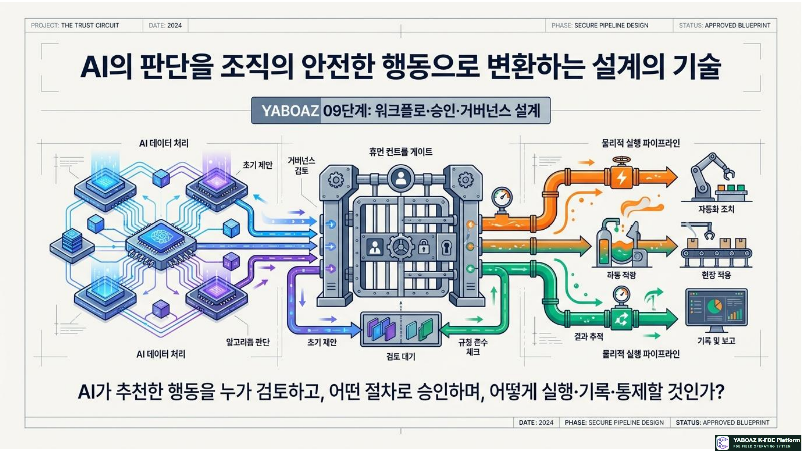
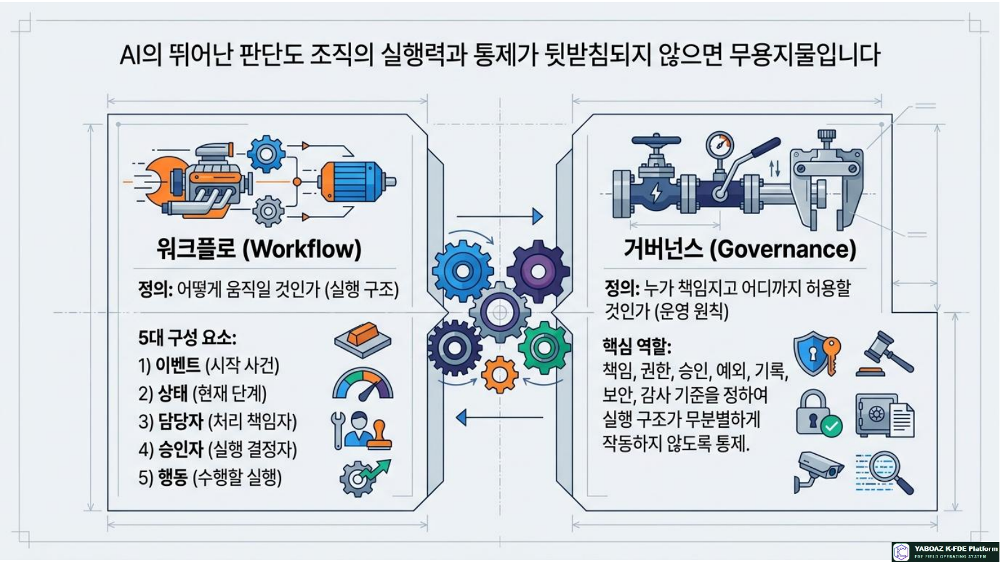
2. 09?④퀎???꾩튂? ?듭떖 ?곗텧臾?/h2>01 ?⑤낫????02 Evidence ??03 2A4 ??04 Discovery ??05 ?명꽣酉???06 ?⑦넧濡쒖? ??07 AI ?먮떒 ??08 Agent ??09 ?뚰겕?뚮줈 ??10 UI쨌?곗씠????11 MVP ??12 Bootcamp ??13 ?먯궛??/div>8?④퀎源뚯?媛 AI媛 臾댁뾿???댄빐?섍퀬 ?먮떒?좎?瑜??ㅺ퀎?섎뒗 怨쇱젙?대씪硫? 9?④퀎??洹??먮떒??議곗쭅??梨낆엫쨌?뱀씤쨌?낅Т ?먮쫫?쇰줈 ?꾪솚?섎뒗 ?④퀎?낅땲??
?듭떖 ?곗텧臾?/h3>?뚰겕?뚮줈 ?뺤쓽??/strong>?쒖옉 議곌굔쨌?④퀎쨌?곹깭쨌?대떦?먃룹쥌猷?議곌굔?곹깭 ?꾩씠??/strong>?대깽?몄뿉 ?곕Ⅸ ?곹깭 蹂??/div>?뱀씤 援ъ“??/strong>?뱀씤?먃룸?泥??뱀씤?먃룹“嫄?/div>RACI 梨낆엫??/strong>?ㅽ뻾쨌梨낆엫쨌?묒쓽쨌?듬낫Human GateAI 異붿쿇 ???щ엺 ?뱀씤 吏??/div>?덉쇅 寃쎈줈??/strong>?ㅻ쪟쨌?꾨씫쨌諛섎젮쨌蹂대쪟쨌湲닿툒 ?고쉶沅뚰븳쨌?뚮┝??/strong>??븷蹂?沅뚰븳怨??먯뒪而щ젅?댁뀡媛먯궗쨌濡ㅻ갚쨌KPI湲곕줉쨌以묐떒 湲곗?쨌?깃낵 痢≪젙
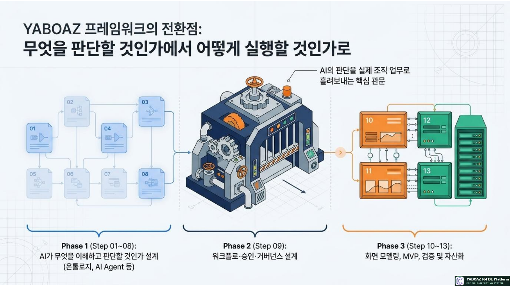
AI Workflow and Governance Blueprint ??3????蹂κ텤?熬곎逾???? 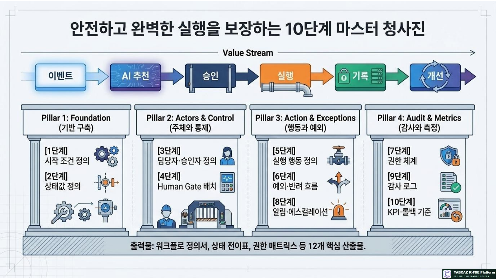
AI Workflow and Governance Blueprint ??4????蹂κ텤?熬곎逾???? 3. ?ㅺ퀎 ?꾩껜 ?먮쫫 10?④퀎
01?뚰겕?뚮줈 ?쒖옉 議곌굔 ?뺤쓽
?대뼡 ?대깽?멸? 諛쒖깮?섎㈃ ?쒖옉?섎뒗吏, ?꾩닔 ?곗씠?곗? 理쒖큹 ?대떦?먮? 吏?뺥빀?덈떎.
02?낅Т ?④퀎? ?곹깭媛??뺤쓽
媛먯?쨌?뺤씤쨌?먮떒쨌?뱀씤쨌?ㅽ뻾쨌?꾨즺쨌?ㅽ뙣 ???곹깭? ?꾩씠瑜??뺤쓽?⑸땲??
03?대떦?먯? ?뱀씤???뺤쓽
?붿껌?먃룸떞?뱀옄쨌寃?좎옄쨌?뱀씤?먃룸?泥??뱀씤?먃룰컧?ъ옄瑜?吏?뺥빀?덈떎.
04Human Gate 諛곗튂
?덉쟾쨌踰뺤쟻 梨낆엫쨌媛쒖씤?뺣낫쨌?몃? ?듭?쨌鍮꾩슜쨌??? ?좊ː??吏?먯뿉 ?뱀씤 寃뚯씠?몃? ?〓땲??
05?ㅽ뻾 ?됰룞 ?뺤쓽
?뚮┝쨌?뱀씤 ?붿껌쨌諛곗젙쨌?곹깭 蹂寃승룸낫怨졖룹감?㉱룹뿉?ㅼ뺄?덉씠???됰룞??援ъ껜?뷀빀?덈떎.
06?덉쇅쨌諛섎젮 ?먮쫫 ?뺤쓽
?곗씠??遺議굿룹땐?뙿룹듅?몄옄 遺??룹떊猶곕룄 ??쓬쨌?ㅽ뻾 ?ㅽ뙣쨌諛섎젮쨌蹂대쪟瑜??ㅺ퀎?⑸땲??
07沅뚰븳 泥닿퀎 ?ㅺ퀎
??븷蹂?議고쉶쨌?묒꽦쨌?섏젙쨌異붿쿇쨌?뱀씤쨌?ㅽ뻾쨌痍⑥냼쨌媛먯궗 沅뚰븳???섎닏?덈떎.
08?뚮┝쨌?먯뒪而щ젅?댁뀡 ?ㅺ퀎
??겶룹“嫄는룹콈?먃룹쓳?돠룹젣???쒓컙쨌誘몄쓳??泥섎━? 湲곕줉???뺥빀?덈떎.
09媛먯궗 濡쒓렇쨌濡ㅻ갚 湲곗? ?뺤쓽
?먮떒遺???ㅽ뻾源뚯???濡쒓렇? ?섎せ???ㅽ뻾??硫덉텛嫄곕굹 ?섎룎由?議곌굔???뺥빀?덈떎.
10KPI쨌?먯궛??湲곗? ?뺤쓽
泥섎━?쒓컙쨌?뱀씤瑜졖룹삤瑜섏쑉쨌SLA쨌濡쒓렇 ?꾩쟾?깃낵 ?ъ궗??媛?ν븳 ?쒗뵆由?湲곗????뺤젙?⑸땲??
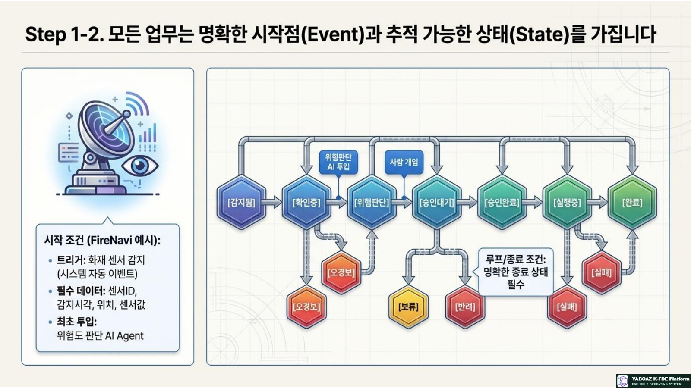
AI Workflow and Governance Blueprint ??5????蹂κ텤?熬곎逾???? 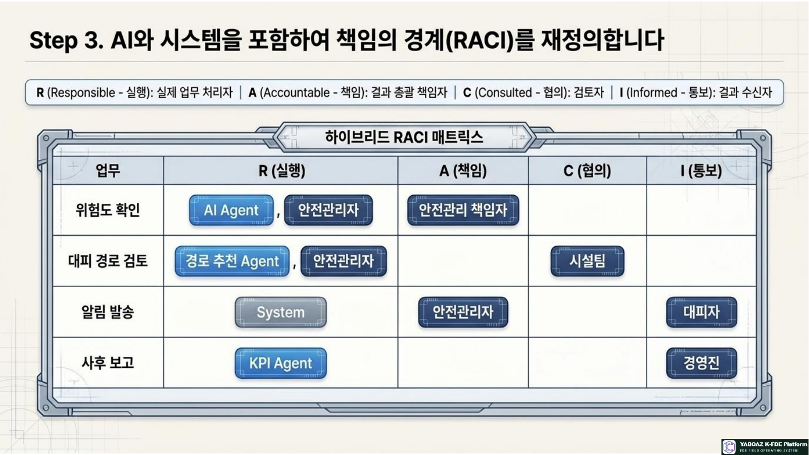
AI Workflow and Governance Blueprint ??6????蹂κ텤?熬곎逾???? 4. ?곹깭쨌?대떦?먃톀ACI ?ㅺ퀎
?곹깭媛믨낵 ?곹깭 ?꾩씠
?곹깭 ?ㅻ챸 ?ㅼ쓬 ?곹깭 痢≪젙 吏??/th> 媛먯???/td> ?대깽??諛쒖깮 ?뺤씤以?/td> 媛먯??믫솗???쒓컙 ?뺤씤以?/td> ?대떦?먃텮gent ?뺤씤 ?꾪뿕?먮떒쨌?ㅺ꼍蹂?/td> ?뺤씤 ?뚯슂?쒓컙 ?꾪뿕?먮떒 AI ?꾪뿕??異붿쿇 ?뱀씤?湲?/td> ?먮떒 ?꾨즺?쒓컙 ?뱀씤?湲?/td> ?щ엺 ?뱀씤 ?꾩슂 ?뱀씤?꾨즺쨌諛섎젮쨌蹂대쪟 ?뱀씤 ?뚯슂?쒓컙 ?뱀씤?꾨즺 ?ㅽ뻾 媛??/td> ?ㅽ뻾以?/td> ?뱀씤 ??李⑹닔?쒓컙 ?ㅽ뻾以?/td> ?뚮┝쨌議곗튂 吏꾪뻾 ?꾨즺쨌?ㅽ뙣 ?ㅽ뻾 ?깃났瑜?/td> ?꾨즺 ?낅Т 醫낅즺 寃利?/td> ?꾩껜 泥섎━?쒓컙 諛섎젮쨌蹂대쪟쨌?ㅽ뙣 醫낅즺쨌?ш??졖룹닔?숈쿂由?/td> ?ш??졖룹옱?쒕룄쨌醫낅즺 ?덉쇅?㉱룹옱?묒뾽瑜?/td>
RACI 梨낆엫??/h3>
?낅Т R ?ㅽ뻾 A 梨낆엫 C ?묒쓽 I ?듬낫 ?꾪뿕???뺤씤 AI Agent쨌?덉쟾愿由ъ옄 ?덉쟾愿由?梨낆엫??/td> ?쒖꽕? 嫄대Ъ愿由ъ옄 ???寃쎈줈 寃??/td> 寃쎈줈 異붿쿇 Agent ?덉쟾愿由ъ옄 ?쒖꽕? ?낆＜?????/td> ????덈궡 ?뱀씤 ?덉쟾愿由ъ옄 愿由ъ콉?꾩옄 ?꾩옣?대떦??/td> ?낆＜??/td> ?뚮┝ 諛쒖넚쨌?ы썑蹂닿퀬 ?쒖뒪?쑣텸PI Agent ?덉쟾愿由ъ옄 ?쒖꽕? 寃쎌쁺吏?/td>
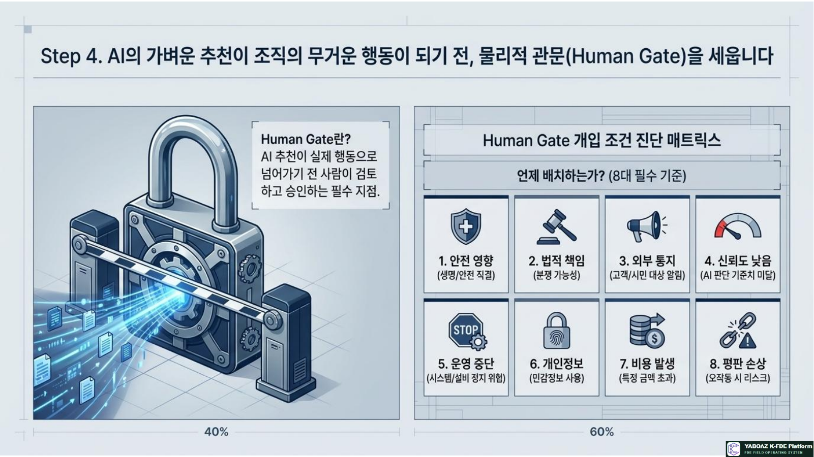
AI Workflow and Governance Blueprint ??7????蹂κ텤?熬곎逾???? 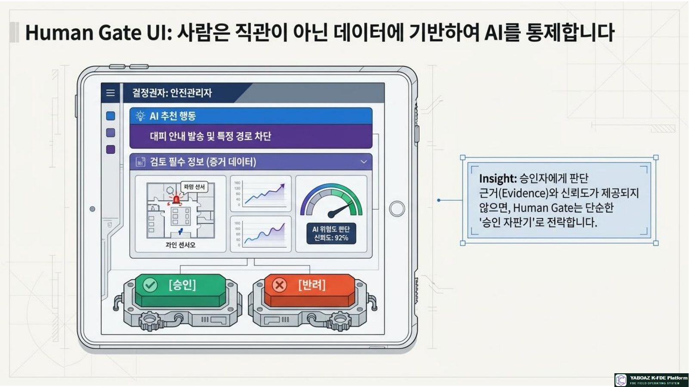
AI Workflow and Governance Blueprint ??8????蹂κ텤?熬곎逾???? 5. Human Gate? ?ㅽ뻾 ?됰룞
Human Gate 諛곗튂 湲곗?
?덉쟾 ?곹뼢?щ엺???앸챸쨌?덉쟾??吏곸젒 ?곹뼢梨낆엫쨌洹쒖젣踰뺤쟻 遺꾩웳?대굹 洹쒖젙 ?꾨컲 媛?μ꽦?몃? ?듭?怨좉컼쨌?쒕?쨌?낆＜?먯뿉寃?硫붿떆吏 諛쒖넚?댁쁺 ?곹뼢鍮꾩슜쨌?쒕퉬?ㅒ룹꽕鍮?以묐떒 媛?μ꽦媛쒖씤?뺣낫媛쒖씤쨌誘쇨컧?뺣낫瑜??ъ슜?섎뒗 ?ㅽ뻾?됲뙋 ?곹뼢?ㅻ쪟 ??議곗쭅 ?좊ː???곹뼢??? ?좊ː??/strong>湲곗?媛?誘몃쭔??AI 異붿쿇?섎룎由????놁쓬濡ㅻ갚???대졄嫄곕굹 遺덇??ν븳 ?됰룞Human Gate ?ㅺ퀎??/h3>
AI 異붿쿇 ?뱀씤 議곌굔 ?뱀씤??/th> ?붾㈃ ?꾩닔 ?뺣낫 ?뱀씤 ???됰룞 ?꾪뿕???믪쓬 怨좎쐞???깃툒 ?덉쟾愿由ъ옄 ?쇱꽌 ?꾩튂쨌洹쇨굅쨌?좊ː??/td> ????덈궡 以鍮?/td> 寃쎈줈 李⑤떒 寃쎈줈 ?꾪뿕 ?먮떒 ?쒖꽕愿由ъ옄 李⑤떒 ?댁쑀쨌?泥?寃쎈줈 寃쎈줈 ?쒖쇅 ????덈궡 諛쒖넚 ?몃? ????뚮┝ ?덉쟾梨낆엫??/td> ??겶룸찓?쒖?쨌寃쎈줈 ?뚮┝ 諛쒖넚 湲닿툒 議곗튂 ?댁쁺 以묐떒 ?곹뼢 珥앷큵 梨낆엫??/td> ?곹뼢쨌??댟룸났援ш퀎??/td> 議곗튂 ?ㅽ뻾
?ㅽ뻾 ?됰룞 ?뺤쓽
?됰룞 二쇱껜 議곌굔 ?낅젰 ?뱀씤 ?꾪뿕???먮떒 AI Agent ?쇱꽌 媛먯? ?쇱꽌 濡쒓렇 遺덊븘??/td> ?뱀씤 ?붿껌 ?쒖뒪??/td> ?꾪뿕???믪쓬 洹쇨굅쨌?좊ː??/td> 遺덊븘??/td> ????덈궡 ?뱀씤 ?덉쟾愿由ъ옄 ?붿껌 ?섏떊 異붿쿇 寃쎈줈 ?꾩닔 ?뚮┝ 諛쒖넚 ?쒖뒪??/td> ?뱀씤 ?꾨즺 ??겶룸찓?쒖? ?뱀씤 ??/td> 寃곌낵 蹂닿퀬 KPI Agent ?ㅽ뻾 ?꾨즺 ?ㅽ뻾 濡쒓렇 遺덊븘??/td>
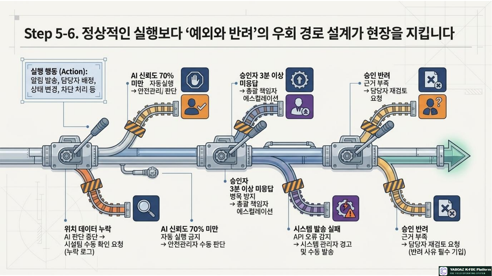
AI Workflow and Governance Blueprint ??9????蹂κ텤?熬곎逾???? 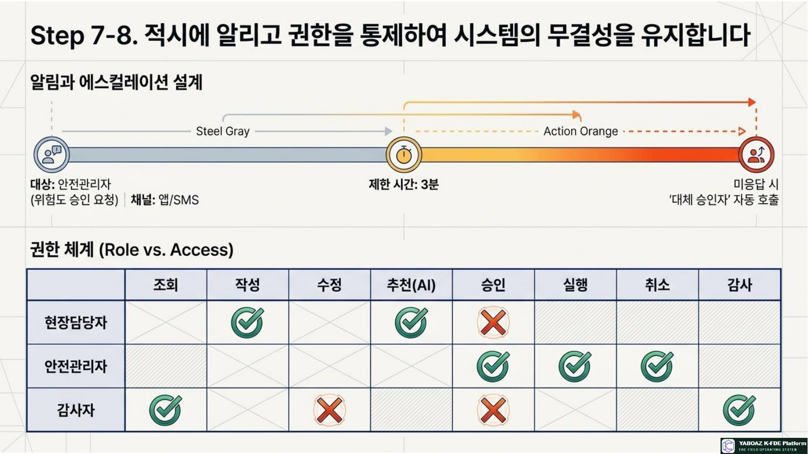
AI Workflow and Governance Blueprint ??10????蹂κ텤?熬곎逾???? 6. ?덉쇅쨌諛섎젮쨌沅뚰븳 泥닿퀎
?덉쇅 泥섎━??/h3>
?덉쇅 議곌굔 泥섎━ 梨낆엫??/th> 湲곕줉 ?꾩닔 ?곗씠???꾨씫 ?쇱꽌 ?꾩튂 ?놁쓬 ?쒖꽕? ?뺤씤 ?붿껌 ?쒖꽕愿由ъ옄 ?꾨씫 濡쒓렇 AI ?좊ː????쓬 70% 誘몃쭔 ?먮룞 ?ㅽ뻾 湲덉? ?덉쟾愿由ъ옄 ?좊ː??濡쒓렇 ?뱀씤??遺??/td> 3遺?珥덇낵 ?泥??뱀씤???몄텧 珥앷큵 梨낆엫??/td> ?먯뒪而щ젅?댁뀡 濡쒓렇 ?뚮┝ 諛쒖넚 ?ㅽ뙣 API ?ㅻ쪟 ?ъ떆?????섎룞 諛쒖넚 ?쒖뒪??愿由ъ옄 ?ㅻ쪟 濡쒓렇 ?뱀씤 諛섎젮 洹쇨굅 遺議?/td> ?ш????붿껌 ?대떦??/td> 諛섎젮 ?ъ쑀
沅뚰븳 留ㅽ듃由?뒪
??븷 議고쉶 ?묒꽦 ?섏젙 異붿쿇 ?뱀씤 ?ㅽ뻾 痍⑥냼쨌媛먯궗 ?쇰컲 ?ъ슜??/td> O ?쒗븳 X X X X X ?꾩옣 ?대떦??/td> O O ?쒗븳 O X O ?쒗븳 ?덉쟾愿由ъ옄 O O O O O O ?쒗븳 ?쒖뒪??愿由ъ옄 O O O X X O O 媛먯궗??/td> O X X X X X O AI Agent ?쒗븳 O ?쒗븳 O X ?뱀씤 ??/td> ?먮룞湲곕줉
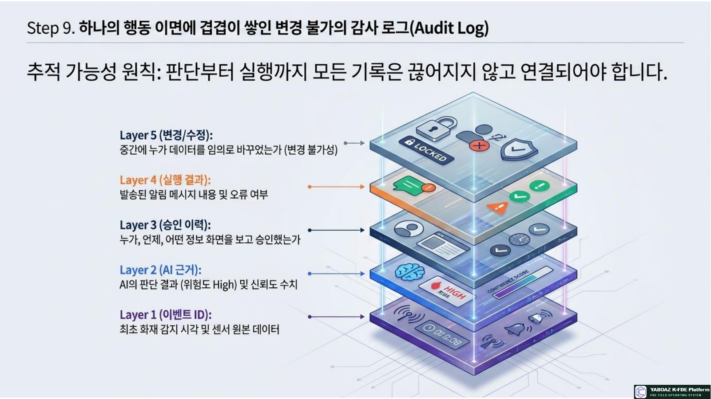
AI Workflow and Governance Blueprint ??11????蹂κ텤?熬곎逾???? 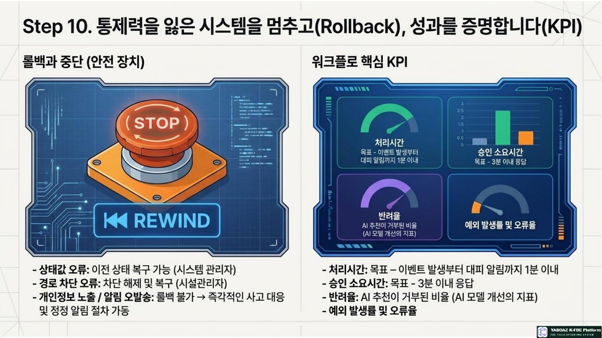
AI Workflow and Governance Blueprint ??12????蹂κ텤?熬곎逾???? 7. ?뚮┝쨌媛먯궗 濡쒓렇쨌濡ㅻ갚 ?ㅺ퀎
?뚮┝怨??먯뒪而щ젅?댁뀡
?곹솴 ???/th> 梨꾨꼸 ?쒗븳 ?쒓컙 誘몄쓳??泥섎━ ?꾪뿕???믪쓬 ?덉쟾愿由ъ옄 ?굿톁MS 3遺?/td> ?泥??뱀씤??/td> 寃쎈줈 李⑤떒 ?쒖꽕? ??/td> 5遺?/td> 愿由ъ옄 ?뚮┝ 諛쒖넚 ?꾨즺 愿由ъ옄 ??/td> ?놁쓬 湲곕줉留?/td> ?ㅽ뻾 ?ㅽ뙣 ?쒖뒪??愿由ъ옄 ?굿룹씠硫붿씪 利됱떆 ?섎룞 諛쒖넚
媛먯궗 濡쒓렇 ??ぉ
?앸퀎??/strong>?대깽??ID쨌?뚰겕?뚮줈 ID쨌?쒓컖?곹깭 ?꾩씠?댁쟾 ?곹깭? ?댄썑 ?곹깭AI ?먮떒異붿쿇쨌洹쇨굅쨌?좊ː??/div>?뱀씤?뱀씤?먃룰껐怨셋룹궗??/div>?ㅽ뻾?됰룞쨌?ㅽ뻾?먃룰껐怨?/div>?덉쇅?ㅻ쪟쨌諛섎젮쨌?먯뒪而щ젅?댁뀡蹂寃??대젰?꾧? 臾댁뾿??蹂寃쏀뻽?붽?KPI泥섎━?쒓컙쨌?꾨즺?㉱룹삤瑜섏쑉濡ㅻ갚쨌以묐떒 湲곗?
?곹솴 濡ㅻ갚쨌以묐떒 ?됰룞 ?뱀씤?먃룰린濡?/th> ?섎せ???곹깭 蹂寃?/td> ?댁쟾 ?곹깭 蹂듦뎄 ?쒖뒪??愿由ъ옄쨌蹂寃?濡쒓렇 ?뚮┝ ?ㅻ컻??/td> ?뺤젙 ?뚮┝쨌?ш퀬 湲곕줉 愿由ъ옄쨌?ш퀬 濡쒓렇 ?뱀씤 ?놁씠 ?ㅽ뻾 利됱떆 以묐떒쨌媛먯궗???듬낫 媛먯궗?먃룸낫??濡쒓렇 AI ?ㅻ쪟 諛섎났 Agent ?ъ슜 ?쒗븳쨌媛쒖꽑 ?깅줉 ?댁쁺梨낆엫?먃룰컻??諛깅줈洹?/td> 媛쒖씤?뺣낫 ?몄텧 ?섏떖 ?묎렐 李⑤떒쨌?ш퀬 ???/td> 蹂댁븞梨낆엫?먃룸낫??濡쒓렇
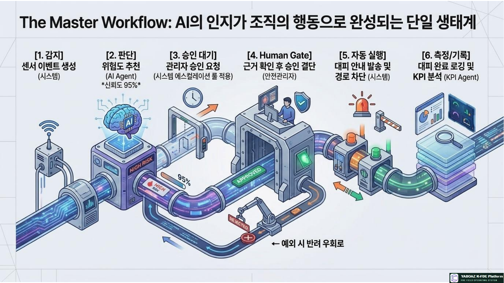
AI Workflow and Governance Blueprint ??13????蹂κ텤?熬곎逾???? 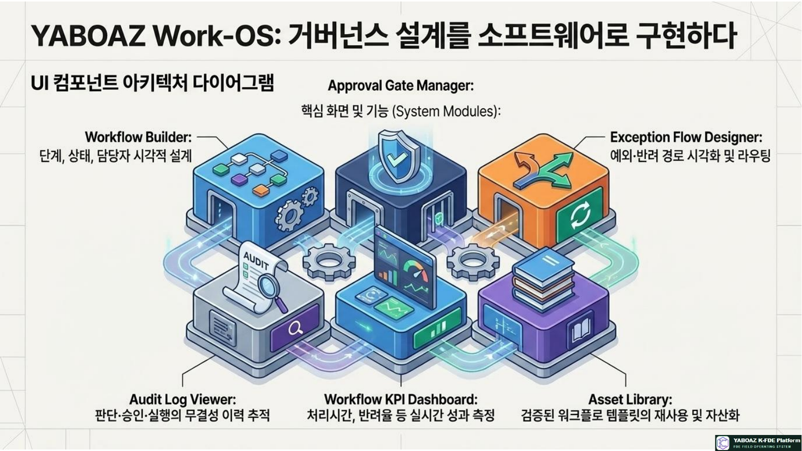
AI Workflow and Governance Blueprint ??14????蹂κ텤?熬곎逾???? 8. KPI쨌FireNavi ?곸슜쨌?ㅼ뒿
?뚰겕?뚮줈 KPI
KPI ?섎? ?덉떆 紐⑺몴 泥섎━?쒓컙 ?대깽?몃????꾨즺源뚯? ?꾩껜 ???10遺??대궡 ?뱀씤 ?뚯슂?쒓컙 ?뱀씤 ?붿껌遺???뱀씤源뚯? 3遺??대궡 異붿쿇 梨꾪깮瑜?/td> AI 異붿쿇???ㅼ젣 ?ъ슜??鍮꾩쑉 70% ?댁긽 諛섎젮쨌?섏젙瑜?/td> ?щ엺??異붿쿇??嫄곕?쨌?섏젙??鍮꾩쑉 吏??媛먯냼 ?덉쇅쨌?ㅻ쪟??/td> ?뺤긽 ?먮쫫 ?댄깉怨??ㅽ뻾 ?ㅽ뙣 1% ?댄븯 SLA쨌濡쒓렇 ?꾩쟾??/td> 湲고븳 ??泥섎━? 湲곕줉 ?꾨씫 ?щ? 99% ?댁긽
FireNavi ?뚰겕?뚮줈
?쇱꽌 媛먯? ??媛먯??????꾪뿕???먮떒 Agent ???뺤씤以????뱀씤?湲????덉쟾愿由ъ옄 ?뱀씤 ???ㅽ뻾以???????덈궡 ???꾨즺 ??KPI 寃利?/div>?④퀎 ?곹깭 二쇱껜 ?됰룞 1 媛먯???/td> ?쇱꽌 ?쒖뒪??/td> ?쇱꽌 ?대깽???앹꽦쨌濡쒓렇 ???/td> 2 ?뺤씤以?/td> ?꾪뿕???먮떒 Agent ?꾪뿕?꽷룰렐嫄걔룹떊猶곕룄 異붿쿇 3 ?뱀씤?湲?/td> ?쒖뒪??/td> ?덉쟾愿由ъ옄 ?뱀씤 ?붿껌 4 ?뱀씤寃??/td> ?덉쟾愿由ъ옄 洹쇨굅 ?뺤씤 ???뱀씤쨌諛섎젮쨌蹂대쪟 5 ?ㅽ뻾以?/td> ?쒖뒪??/td> ?뱀씤??????덈궡 諛쒖넚 6 ??쇱쨷쨌?꾨즺 ??쇱옄쨌KPI Agent ???寃곌낵? ?깃낵 湲곕줉 7 寃利?/td> 愿由ъ옄 寃곌낵 寃?졖룰컻?졖룹옄?고솕
09?④퀎 ?꾨즺 泥댄겕由ъ뒪??/h3>?쒖옉 ?대깽?몄? ?꾩닔 ?낅젰???뺤쓽??/div>?낅Т ?곹깭? ?곹깭 ?꾩씠媛 ?뺤쓽??/div>?대떦?먃룹듅?몄옄쨌?泥??뱀씤?먭? 吏?뺣맖RACI 梨낆엫?쒓? ?뱀씤??/div>Human Gate媛 ?꾪뿕 吏?먯뿉 諛곗튂??/div>?ㅽ뻾 ?됰룞怨?議곌굔??援ъ껜?붾맖?덉쇅쨌諛섎젮쨌蹂대쪟쨌湲닿툒 ?고쉶媛 ?ㅺ퀎??/div>??븷蹂?沅뚰븳 留ㅽ듃由?뒪媛 ?뺤젙??/div>?뚮┝쨌?쒗븳 ?쒓컙쨌?먯뒪而щ젅?댁뀡???ㅼ젙??/div>媛먯궗 濡쒓렇? 蹂댁〈 ?먯튃???뺥빐吏?/div>濡ㅻ갚쨌以묐떒 湲곗????뺤쓽??/div>KPI? ?뚰겕?뚮줈 ?먯궛??湲곗????뱀씤??/div>47?④퀎??理쒖쥌 紐⑹쟻AI Agent???먮떒??議곗쭅???ㅼ젣 ?낅Т ?먮쫫?쇰줈 ?섎젮蹂대궡怨? ?щ엺???뱀씤怨?沅뚰븳 ?듭젣, ?덉쇅 泥섎━, 媛먯궗 湲곕줉, 濡ㅻ갚, KPI瑜?寃고빀???댁쁺 媛?ν븳 ?뚰겕?뚮줈 ?먯궛?쇰줈 留뚮뱶??寃껋엯?덈떎.
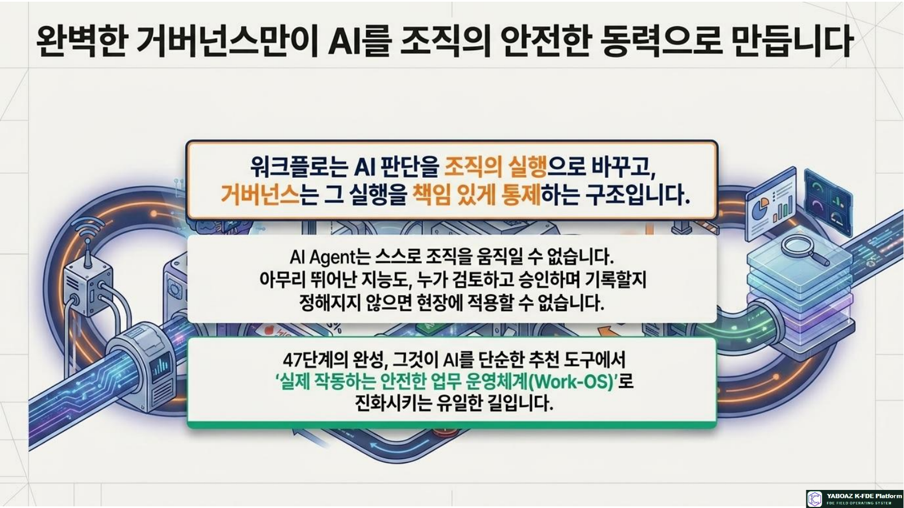
AI Workflow and Governance Blueprint ??15????蹂κ텤?熬곎逾????
8?④퀎源뚯?媛 AI媛 臾댁뾿???댄빐?섍퀬 ?먮떒?좎?瑜??ㅺ퀎?섎뒗 怨쇱젙?대씪硫? 9?④퀎??洹??먮떒??議곗쭅??梨낆엫쨌?뱀씤쨌?낅Т ?먮쫫?쇰줈 ?꾪솚?섎뒗 ?④퀎?낅땲??
?듭떖 ?곗텧臾?/h3>?뚰겕?뚮줈 ?뺤쓽??/strong>?쒖옉 議곌굔쨌?④퀎쨌?곹깭쨌?대떦?먃룹쥌猷?議곌굔?곹깭 ?꾩씠??/strong>?대깽?몄뿉 ?곕Ⅸ ?곹깭 蹂??/div>?뱀씤 援ъ“??/strong>?뱀씤?먃룸?泥??뱀씤?먃룹“嫄?/div>RACI 梨낆엫??/strong>?ㅽ뻾쨌梨낆엫쨌?묒쓽쨌?듬낫Human GateAI 異붿쿇 ???щ엺 ?뱀씤 吏??/div>?덉쇅 寃쎈줈??/strong>?ㅻ쪟쨌?꾨씫쨌諛섎젮쨌蹂대쪟쨌湲닿툒 ?고쉶沅뚰븳쨌?뚮┝??/strong>??븷蹂?沅뚰븳怨??먯뒪而щ젅?댁뀡媛먯궗쨌濡ㅻ갚쨌KPI湲곕줉쨌以묐떒 湲곗?쨌?깃낵 痢≪젙

AI Workflow and Governance Blueprint ??3????蹂κ텤?熬곎逾???? 
AI Workflow and Governance Blueprint ??4????蹂κ텤?熬곎逾???? 3. ?ㅺ퀎 ?꾩껜 ?먮쫫 10?④퀎
01?뚰겕?뚮줈 ?쒖옉 議곌굔 ?뺤쓽
?대뼡 ?대깽?멸? 諛쒖깮?섎㈃ ?쒖옉?섎뒗吏, ?꾩닔 ?곗씠?곗? 理쒖큹 ?대떦?먮? 吏?뺥빀?덈떎.
02?낅Т ?④퀎? ?곹깭媛??뺤쓽
媛먯?쨌?뺤씤쨌?먮떒쨌?뱀씤쨌?ㅽ뻾쨌?꾨즺쨌?ㅽ뙣 ???곹깭? ?꾩씠瑜??뺤쓽?⑸땲??
03?대떦?먯? ?뱀씤???뺤쓽
?붿껌?먃룸떞?뱀옄쨌寃?좎옄쨌?뱀씤?먃룸?泥??뱀씤?먃룰컧?ъ옄瑜?吏?뺥빀?덈떎.
04Human Gate 諛곗튂
?덉쟾쨌踰뺤쟻 梨낆엫쨌媛쒖씤?뺣낫쨌?몃? ?듭?쨌鍮꾩슜쨌??? ?좊ː??吏?먯뿉 ?뱀씤 寃뚯씠?몃? ?〓땲??
05?ㅽ뻾 ?됰룞 ?뺤쓽
?뚮┝쨌?뱀씤 ?붿껌쨌諛곗젙쨌?곹깭 蹂寃승룸낫怨졖룹감?㉱룹뿉?ㅼ뺄?덉씠???됰룞??援ъ껜?뷀빀?덈떎.
06?덉쇅쨌諛섎젮 ?먮쫫 ?뺤쓽
?곗씠??遺議굿룹땐?뙿룹듅?몄옄 遺??룹떊猶곕룄 ??쓬쨌?ㅽ뻾 ?ㅽ뙣쨌諛섎젮쨌蹂대쪟瑜??ㅺ퀎?⑸땲??
07沅뚰븳 泥닿퀎 ?ㅺ퀎
??븷蹂?議고쉶쨌?묒꽦쨌?섏젙쨌異붿쿇쨌?뱀씤쨌?ㅽ뻾쨌痍⑥냼쨌媛먯궗 沅뚰븳???섎닏?덈떎.
08?뚮┝쨌?먯뒪而щ젅?댁뀡 ?ㅺ퀎
??겶룹“嫄는룹콈?먃룹쓳?돠룹젣???쒓컙쨌誘몄쓳??泥섎━? 湲곕줉???뺥빀?덈떎.
09媛먯궗 濡쒓렇쨌濡ㅻ갚 湲곗? ?뺤쓽
?먮떒遺???ㅽ뻾源뚯???濡쒓렇? ?섎せ???ㅽ뻾??硫덉텛嫄곕굹 ?섎룎由?議곌굔???뺥빀?덈떎.
10KPI쨌?먯궛??湲곗? ?뺤쓽
泥섎━?쒓컙쨌?뱀씤瑜졖룹삤瑜섏쑉쨌SLA쨌濡쒓렇 ?꾩쟾?깃낵 ?ъ궗??媛?ν븳 ?쒗뵆由?湲곗????뺤젙?⑸땲??

AI Workflow and Governance Blueprint ??5????蹂κ텤?熬곎逾???? 
AI Workflow and Governance Blueprint ??6????蹂κ텤?熬곎逾???? 4. ?곹깭쨌?대떦?먃톀ACI ?ㅺ퀎
?곹깭媛믨낵 ?곹깭 ?꾩씠
?곹깭 ?ㅻ챸 ?ㅼ쓬 ?곹깭 痢≪젙 吏??/th> 媛먯???/td> ?대깽??諛쒖깮 ?뺤씤以?/td> 媛먯??믫솗???쒓컙 ?뺤씤以?/td> ?대떦?먃텮gent ?뺤씤 ?꾪뿕?먮떒쨌?ㅺ꼍蹂?/td> ?뺤씤 ?뚯슂?쒓컙 ?꾪뿕?먮떒 AI ?꾪뿕??異붿쿇 ?뱀씤?湲?/td> ?먮떒 ?꾨즺?쒓컙 ?뱀씤?湲?/td> ?щ엺 ?뱀씤 ?꾩슂 ?뱀씤?꾨즺쨌諛섎젮쨌蹂대쪟 ?뱀씤 ?뚯슂?쒓컙 ?뱀씤?꾨즺 ?ㅽ뻾 媛??/td> ?ㅽ뻾以?/td> ?뱀씤 ??李⑹닔?쒓컙 ?ㅽ뻾以?/td> ?뚮┝쨌議곗튂 吏꾪뻾 ?꾨즺쨌?ㅽ뙣 ?ㅽ뻾 ?깃났瑜?/td> ?꾨즺 ?낅Т 醫낅즺 寃利?/td> ?꾩껜 泥섎━?쒓컙 諛섎젮쨌蹂대쪟쨌?ㅽ뙣 醫낅즺쨌?ш??졖룹닔?숈쿂由?/td> ?ш??졖룹옱?쒕룄쨌醫낅즺 ?덉쇅?㉱룹옱?묒뾽瑜?/td>
RACI 梨낆엫??/h3>
?낅Т R ?ㅽ뻾 A 梨낆엫 C ?묒쓽 I ?듬낫 ?꾪뿕???뺤씤 AI Agent쨌?덉쟾愿由ъ옄 ?덉쟾愿由?梨낆엫??/td> ?쒖꽕? 嫄대Ъ愿由ъ옄 ???寃쎈줈 寃??/td> 寃쎈줈 異붿쿇 Agent ?덉쟾愿由ъ옄 ?쒖꽕? ?낆＜?????/td> ????덈궡 ?뱀씤 ?덉쟾愿由ъ옄 愿由ъ콉?꾩옄 ?꾩옣?대떦??/td> ?낆＜??/td> ?뚮┝ 諛쒖넚쨌?ы썑蹂닿퀬 ?쒖뒪?쑣텸PI Agent ?덉쟾愿由ъ옄 ?쒖꽕? 寃쎌쁺吏?/td>

AI Workflow and Governance Blueprint ??7????蹂κ텤?熬곎逾???? 
AI Workflow and Governance Blueprint ??8????蹂κ텤?熬곎逾???? 5. Human Gate? ?ㅽ뻾 ?됰룞
Human Gate 諛곗튂 湲곗?
?덉쟾 ?곹뼢?щ엺???앸챸쨌?덉쟾??吏곸젒 ?곹뼢梨낆엫쨌洹쒖젣踰뺤쟻 遺꾩웳?대굹 洹쒖젙 ?꾨컲 媛?μ꽦?몃? ?듭?怨좉컼쨌?쒕?쨌?낆＜?먯뿉寃?硫붿떆吏 諛쒖넚?댁쁺 ?곹뼢鍮꾩슜쨌?쒕퉬?ㅒ룹꽕鍮?以묐떒 媛?μ꽦媛쒖씤?뺣낫媛쒖씤쨌誘쇨컧?뺣낫瑜??ъ슜?섎뒗 ?ㅽ뻾?됲뙋 ?곹뼢?ㅻ쪟 ??議곗쭅 ?좊ː???곹뼢??? ?좊ː??/strong>湲곗?媛?誘몃쭔??AI 異붿쿇?섎룎由????놁쓬濡ㅻ갚???대졄嫄곕굹 遺덇??ν븳 ?됰룞Human Gate ?ㅺ퀎??/h3>
AI 異붿쿇 ?뱀씤 議곌굔 ?뱀씤??/th> ?붾㈃ ?꾩닔 ?뺣낫 ?뱀씤 ???됰룞 ?꾪뿕???믪쓬 怨좎쐞???깃툒 ?덉쟾愿由ъ옄 ?쇱꽌 ?꾩튂쨌洹쇨굅쨌?좊ː??/td> ????덈궡 以鍮?/td> 寃쎈줈 李⑤떒 寃쎈줈 ?꾪뿕 ?먮떒 ?쒖꽕愿由ъ옄 李⑤떒 ?댁쑀쨌?泥?寃쎈줈 寃쎈줈 ?쒖쇅 ????덈궡 諛쒖넚 ?몃? ????뚮┝ ?덉쟾梨낆엫??/td> ??겶룸찓?쒖?쨌寃쎈줈 ?뚮┝ 諛쒖넚 湲닿툒 議곗튂 ?댁쁺 以묐떒 ?곹뼢 珥앷큵 梨낆엫??/td> ?곹뼢쨌??댟룸났援ш퀎??/td> 議곗튂 ?ㅽ뻾
?ㅽ뻾 ?됰룞 ?뺤쓽
?됰룞 二쇱껜 議곌굔 ?낅젰 ?뱀씤 ?꾪뿕???먮떒 AI Agent ?쇱꽌 媛먯? ?쇱꽌 濡쒓렇 遺덊븘??/td> ?뱀씤 ?붿껌 ?쒖뒪??/td> ?꾪뿕???믪쓬 洹쇨굅쨌?좊ː??/td> 遺덊븘??/td> ????덈궡 ?뱀씤 ?덉쟾愿由ъ옄 ?붿껌 ?섏떊 異붿쿇 寃쎈줈 ?꾩닔 ?뚮┝ 諛쒖넚 ?쒖뒪??/td> ?뱀씤 ?꾨즺 ??겶룸찓?쒖? ?뱀씤 ??/td> 寃곌낵 蹂닿퀬 KPI Agent ?ㅽ뻾 ?꾨즺 ?ㅽ뻾 濡쒓렇 遺덊븘??/td>

AI Workflow and Governance Blueprint ??9????蹂κ텤?熬곎逾???? 
AI Workflow and Governance Blueprint ??10????蹂κ텤?熬곎逾???? 6. ?덉쇅쨌諛섎젮쨌沅뚰븳 泥닿퀎
?덉쇅 泥섎━??/h3>
?덉쇅 議곌굔 泥섎━ 梨낆엫??/th> 湲곕줉 ?꾩닔 ?곗씠???꾨씫 ?쇱꽌 ?꾩튂 ?놁쓬 ?쒖꽕? ?뺤씤 ?붿껌 ?쒖꽕愿由ъ옄 ?꾨씫 濡쒓렇 AI ?좊ː????쓬 70% 誘몃쭔 ?먮룞 ?ㅽ뻾 湲덉? ?덉쟾愿由ъ옄 ?좊ː??濡쒓렇 ?뱀씤??遺??/td> 3遺?珥덇낵 ?泥??뱀씤???몄텧 珥앷큵 梨낆엫??/td> ?먯뒪而щ젅?댁뀡 濡쒓렇 ?뚮┝ 諛쒖넚 ?ㅽ뙣 API ?ㅻ쪟 ?ъ떆?????섎룞 諛쒖넚 ?쒖뒪??愿由ъ옄 ?ㅻ쪟 濡쒓렇 ?뱀씤 諛섎젮 洹쇨굅 遺議?/td> ?ш????붿껌 ?대떦??/td> 諛섎젮 ?ъ쑀
沅뚰븳 留ㅽ듃由?뒪
??븷 議고쉶 ?묒꽦 ?섏젙 異붿쿇 ?뱀씤 ?ㅽ뻾 痍⑥냼쨌媛먯궗 ?쇰컲 ?ъ슜??/td> O ?쒗븳 X X X X X ?꾩옣 ?대떦??/td> O O ?쒗븳 O X O ?쒗븳 ?덉쟾愿由ъ옄 O O O O O O ?쒗븳 ?쒖뒪??愿由ъ옄 O O O X X O O 媛먯궗??/td> O X X X X X O AI Agent ?쒗븳 O ?쒗븳 O X ?뱀씤 ??/td> ?먮룞湲곕줉

AI Workflow and Governance Blueprint ??11????蹂κ텤?熬곎逾???? 
AI Workflow and Governance Blueprint ??12????蹂κ텤?熬곎逾???? 7. ?뚮┝쨌媛먯궗 濡쒓렇쨌濡ㅻ갚 ?ㅺ퀎
?뚮┝怨??먯뒪而щ젅?댁뀡
?곹솴 ???/th> 梨꾨꼸 ?쒗븳 ?쒓컙 誘몄쓳??泥섎━ ?꾪뿕???믪쓬 ?덉쟾愿由ъ옄 ?굿톁MS 3遺?/td> ?泥??뱀씤??/td> 寃쎈줈 李⑤떒 ?쒖꽕? ??/td> 5遺?/td> 愿由ъ옄 ?뚮┝ 諛쒖넚 ?꾨즺 愿由ъ옄 ??/td> ?놁쓬 湲곕줉留?/td> ?ㅽ뻾 ?ㅽ뙣 ?쒖뒪??愿由ъ옄 ?굿룹씠硫붿씪 利됱떆 ?섎룞 諛쒖넚
媛먯궗 濡쒓렇 ??ぉ
?앸퀎??/strong>?대깽??ID쨌?뚰겕?뚮줈 ID쨌?쒓컖?곹깭 ?꾩씠?댁쟾 ?곹깭? ?댄썑 ?곹깭AI ?먮떒異붿쿇쨌洹쇨굅쨌?좊ː??/div>?뱀씤?뱀씤?먃룰껐怨셋룹궗??/div>?ㅽ뻾?됰룞쨌?ㅽ뻾?먃룰껐怨?/div>?덉쇅?ㅻ쪟쨌諛섎젮쨌?먯뒪而щ젅?댁뀡蹂寃??대젰?꾧? 臾댁뾿??蹂寃쏀뻽?붽?KPI泥섎━?쒓컙쨌?꾨즺?㉱룹삤瑜섏쑉濡ㅻ갚쨌以묐떒 湲곗?
?곹솴 濡ㅻ갚쨌以묐떒 ?됰룞 ?뱀씤?먃룰린濡?/th> ?섎せ???곹깭 蹂寃?/td> ?댁쟾 ?곹깭 蹂듦뎄 ?쒖뒪??愿由ъ옄쨌蹂寃?濡쒓렇 ?뚮┝ ?ㅻ컻??/td> ?뺤젙 ?뚮┝쨌?ш퀬 湲곕줉 愿由ъ옄쨌?ш퀬 濡쒓렇 ?뱀씤 ?놁씠 ?ㅽ뻾 利됱떆 以묐떒쨌媛먯궗???듬낫 媛먯궗?먃룸낫??濡쒓렇 AI ?ㅻ쪟 諛섎났 Agent ?ъ슜 ?쒗븳쨌媛쒖꽑 ?깅줉 ?댁쁺梨낆엫?먃룰컻??諛깅줈洹?/td> 媛쒖씤?뺣낫 ?몄텧 ?섏떖 ?묎렐 李⑤떒쨌?ш퀬 ???/td> 蹂댁븞梨낆엫?먃룸낫??濡쒓렇

AI Workflow and Governance Blueprint ??13????蹂κ텤?熬곎逾???? 
AI Workflow and Governance Blueprint ??14????蹂κ텤?熬곎逾???? 8. KPI쨌FireNavi ?곸슜쨌?ㅼ뒿
?뚰겕?뚮줈 KPI
KPI ?섎? ?덉떆 紐⑺몴 泥섎━?쒓컙 ?대깽?몃????꾨즺源뚯? ?꾩껜 ???10遺??대궡 ?뱀씤 ?뚯슂?쒓컙 ?뱀씤 ?붿껌遺???뱀씤源뚯? 3遺??대궡 異붿쿇 梨꾪깮瑜?/td> AI 異붿쿇???ㅼ젣 ?ъ슜??鍮꾩쑉 70% ?댁긽 諛섎젮쨌?섏젙瑜?/td> ?щ엺??異붿쿇??嫄곕?쨌?섏젙??鍮꾩쑉 吏??媛먯냼 ?덉쇅쨌?ㅻ쪟??/td> ?뺤긽 ?먮쫫 ?댄깉怨??ㅽ뻾 ?ㅽ뙣 1% ?댄븯 SLA쨌濡쒓렇 ?꾩쟾??/td> 湲고븳 ??泥섎━? 湲곕줉 ?꾨씫 ?щ? 99% ?댁긽
FireNavi ?뚰겕?뚮줈
?쇱꽌 媛먯? ??媛먯??????꾪뿕???먮떒 Agent ???뺤씤以????뱀씤?湲????덉쟾愿由ъ옄 ?뱀씤 ???ㅽ뻾以???????덈궡 ???꾨즺 ??KPI 寃利?/div>?④퀎 ?곹깭 二쇱껜 ?됰룞 1 媛먯???/td> ?쇱꽌 ?쒖뒪??/td> ?쇱꽌 ?대깽???앹꽦쨌濡쒓렇 ???/td> 2 ?뺤씤以?/td> ?꾪뿕???먮떒 Agent ?꾪뿕?꽷룰렐嫄걔룹떊猶곕룄 異붿쿇 3 ?뱀씤?湲?/td> ?쒖뒪??/td> ?덉쟾愿由ъ옄 ?뱀씤 ?붿껌 4 ?뱀씤寃??/td> ?덉쟾愿由ъ옄 洹쇨굅 ?뺤씤 ???뱀씤쨌諛섎젮쨌蹂대쪟 5 ?ㅽ뻾以?/td> ?쒖뒪??/td> ?뱀씤??????덈궡 諛쒖넚 6 ??쇱쨷쨌?꾨즺 ??쇱옄쨌KPI Agent ???寃곌낵? ?깃낵 湲곕줉 7 寃利?/td> 愿由ъ옄 寃곌낵 寃?졖룰컻?졖룹옄?고솕
09?④퀎 ?꾨즺 泥댄겕由ъ뒪??/h3>?쒖옉 ?대깽?몄? ?꾩닔 ?낅젰???뺤쓽??/div>?낅Т ?곹깭? ?곹깭 ?꾩씠媛 ?뺤쓽??/div>?대떦?먃룹듅?몄옄쨌?泥??뱀씤?먭? 吏?뺣맖RACI 梨낆엫?쒓? ?뱀씤??/div>Human Gate媛 ?꾪뿕 吏?먯뿉 諛곗튂??/div>?ㅽ뻾 ?됰룞怨?議곌굔??援ъ껜?붾맖?덉쇅쨌諛섎젮쨌蹂대쪟쨌湲닿툒 ?고쉶媛 ?ㅺ퀎??/div>??븷蹂?沅뚰븳 留ㅽ듃由?뒪媛 ?뺤젙??/div>?뚮┝쨌?쒗븳 ?쒓컙쨌?먯뒪而щ젅?댁뀡???ㅼ젙??/div>媛먯궗 濡쒓렇? 蹂댁〈 ?먯튃???뺥빐吏?/div>濡ㅻ갚쨌以묐떒 湲곗????뺤쓽??/div>KPI? ?뚰겕?뚮줈 ?먯궛??湲곗????뱀씤??/div>47?④퀎??理쒖쥌 紐⑹쟻AI Agent???먮떒??議곗쭅???ㅼ젣 ?낅Т ?먮쫫?쇰줈 ?섎젮蹂대궡怨? ?щ엺???뱀씤怨?沅뚰븳 ?듭젣, ?덉쇅 泥섎━, 媛먯궗 湲곕줉, 濡ㅻ갚, KPI瑜?寃고빀???댁쁺 媛?ν븳 ?뚰겕?뚮줈 ?먯궛?쇰줈 留뚮뱶??寃껋엯?덈떎.

AI Workflow and Governance Blueprint ??15????蹂κ텤?熬곎逾????


3. ?ㅺ퀎 ?꾩껜 ?먮쫫 10?④퀎
?뚰겕?뚮줈 ?쒖옉 議곌굔 ?뺤쓽
?대뼡 ?대깽?멸? 諛쒖깮?섎㈃ ?쒖옉?섎뒗吏, ?꾩닔 ?곗씠?곗? 理쒖큹 ?대떦?먮? 吏?뺥빀?덈떎.
?낅Т ?④퀎? ?곹깭媛??뺤쓽
媛먯?쨌?뺤씤쨌?먮떒쨌?뱀씤쨌?ㅽ뻾쨌?꾨즺쨌?ㅽ뙣 ???곹깭? ?꾩씠瑜??뺤쓽?⑸땲??
?대떦?먯? ?뱀씤???뺤쓽
?붿껌?먃룸떞?뱀옄쨌寃?좎옄쨌?뱀씤?먃룸?泥??뱀씤?먃룰컧?ъ옄瑜?吏?뺥빀?덈떎.
Human Gate 諛곗튂
?덉쟾쨌踰뺤쟻 梨낆엫쨌媛쒖씤?뺣낫쨌?몃? ?듭?쨌鍮꾩슜쨌??? ?좊ː??吏?먯뿉 ?뱀씤 寃뚯씠?몃? ?〓땲??
?ㅽ뻾 ?됰룞 ?뺤쓽
?뚮┝쨌?뱀씤 ?붿껌쨌諛곗젙쨌?곹깭 蹂寃승룸낫怨졖룹감?㉱룹뿉?ㅼ뺄?덉씠???됰룞??援ъ껜?뷀빀?덈떎.
?덉쇅쨌諛섎젮 ?먮쫫 ?뺤쓽
?곗씠??遺議굿룹땐?뙿룹듅?몄옄 遺??룹떊猶곕룄 ??쓬쨌?ㅽ뻾 ?ㅽ뙣쨌諛섎젮쨌蹂대쪟瑜??ㅺ퀎?⑸땲??
沅뚰븳 泥닿퀎 ?ㅺ퀎
??븷蹂?議고쉶쨌?묒꽦쨌?섏젙쨌異붿쿇쨌?뱀씤쨌?ㅽ뻾쨌痍⑥냼쨌媛먯궗 沅뚰븳???섎닏?덈떎.
?뚮┝쨌?먯뒪而щ젅?댁뀡 ?ㅺ퀎
??겶룹“嫄는룹콈?먃룹쓳?돠룹젣???쒓컙쨌誘몄쓳??泥섎━? 湲곕줉???뺥빀?덈떎.
媛먯궗 濡쒓렇쨌濡ㅻ갚 湲곗? ?뺤쓽
?먮떒遺???ㅽ뻾源뚯???濡쒓렇? ?섎せ???ㅽ뻾??硫덉텛嫄곕굹 ?섎룎由?議곌굔???뺥빀?덈떎.
KPI쨌?먯궛??湲곗? ?뺤쓽
泥섎━?쒓컙쨌?뱀씤瑜졖룹삤瑜섏쑉쨌SLA쨌濡쒓렇 ?꾩쟾?깃낵 ?ъ궗??媛?ν븳 ?쒗뵆由?湲곗????뺤젙?⑸땲??


4. ?곹깭쨌?대떦?먃톀ACI ?ㅺ퀎
?곹깭媛믨낵 ?곹깭 ?꾩씠
| ?곹깭 | ?ㅻ챸 | ?ㅼ쓬 ?곹깭 | 痢≪젙 吏??/th> |
|---|---|---|---|
| 媛먯???/td> | ?대깽??諛쒖깮 | ?뺤씤以?/td> | 媛먯??믫솗???쒓컙 |
| ?뺤씤以?/td> | ?대떦?먃텮gent ?뺤씤 | ?꾪뿕?먮떒쨌?ㅺ꼍蹂?/td> | ?뺤씤 ?뚯슂?쒓컙 |
| ?꾪뿕?먮떒 | AI ?꾪뿕??異붿쿇 | ?뱀씤?湲?/td> | ?먮떒 ?꾨즺?쒓컙 |
| ?뱀씤?湲?/td> | ?щ엺 ?뱀씤 ?꾩슂 | ?뱀씤?꾨즺쨌諛섎젮쨌蹂대쪟 | ?뱀씤 ?뚯슂?쒓컙 |
| ?뱀씤?꾨즺 | ?ㅽ뻾 媛??/td> | ?ㅽ뻾以?/td> | ?뱀씤 ??李⑹닔?쒓컙 |
| ?ㅽ뻾以?/td> | ?뚮┝쨌議곗튂 吏꾪뻾 | ?꾨즺쨌?ㅽ뙣 | ?ㅽ뻾 ?깃났瑜?/td> |
| ?꾨즺 | ?낅Т 醫낅즺 | 寃利?/td> | ?꾩껜 泥섎━?쒓컙 |
| 諛섎젮쨌蹂대쪟쨌?ㅽ뙣 | 醫낅즺쨌?ш??졖룹닔?숈쿂由?/td> | ?ш??졖룹옱?쒕룄쨌醫낅즺 | ?덉쇅?㉱룹옱?묒뾽瑜?/td> |
RACI 梨낆엫??/h3>
| ?낅Т | R ?ㅽ뻾 | A 梨낆엫 | C ?묒쓽 | I ?듬낫 |
|---|---|---|---|---|
| ?꾪뿕???뺤씤 | AI Agent쨌?덉쟾愿由ъ옄 | ?덉쟾愿由?梨낆엫??/td> | ?쒖꽕? | 嫄대Ъ愿由ъ옄 |
| ???寃쎈줈 寃??/td> | 寃쎈줈 異붿쿇 Agent | ?덉쟾愿由ъ옄 | ?쒖꽕? | ?낆＜?????/td> |
| ????덈궡 ?뱀씤 | ?덉쟾愿由ъ옄 | 愿由ъ콉?꾩옄 | ?꾩옣?대떦??/td> | ?낆＜??/td> |
| ?뚮┝ 諛쒖넚쨌?ы썑蹂닿퀬 | ?쒖뒪?쑣텸PI Agent | ?덉쟾愿由ъ옄 | ?쒖꽕? | 寃쎌쁺吏?/td> |


5. Human Gate? ?ㅽ뻾 ?됰룞
Human Gate 諛곗튂 湲곗?
Human Gate ?ㅺ퀎??/h3>
| AI 異붿쿇 | ?뱀씤 議곌굔 | ?뱀씤??/th> | ?붾㈃ ?꾩닔 ?뺣낫 | ?뱀씤 ???됰룞 |
|---|---|---|---|---|
| ?꾪뿕???믪쓬 | 怨좎쐞???깃툒 | ?덉쟾愿由ъ옄 | ?쇱꽌 ?꾩튂쨌洹쇨굅쨌?좊ː??/td> | ????덈궡 以鍮?/td> |
| 寃쎈줈 李⑤떒 | 寃쎈줈 ?꾪뿕 ?먮떒 | ?쒖꽕愿由ъ옄 | 李⑤떒 ?댁쑀쨌?泥?寃쎈줈 | 寃쎈줈 ?쒖쇅 |
| ????덈궡 諛쒖넚 | ?몃? ????뚮┝ | ?덉쟾梨낆엫??/td> | ??겶룸찓?쒖?쨌寃쎈줈 | ?뚮┝ 諛쒖넚 |
| 湲닿툒 議곗튂 | ?댁쁺 以묐떒 ?곹뼢 | 珥앷큵 梨낆엫??/td> | ?곹뼢쨌??댟룸났援ш퀎??/td> | 議곗튂 ?ㅽ뻾 |
?ㅽ뻾 ?됰룞 ?뺤쓽
| ?됰룞 | 二쇱껜 | 議곌굔 | ?낅젰 | ?뱀씤 |
|---|---|---|---|---|
| ?꾪뿕???먮떒 | AI Agent | ?쇱꽌 媛먯? | ?쇱꽌 濡쒓렇 | 遺덊븘??/td> |
| ?뱀씤 ?붿껌 | ?쒖뒪??/td> | ?꾪뿕???믪쓬 | 洹쇨굅쨌?좊ː??/td> | 遺덊븘??/td> |
| ????덈궡 ?뱀씤 | ?덉쟾愿由ъ옄 | ?붿껌 ?섏떊 | 異붿쿇 寃쎈줈 | ?꾩닔 |
| ?뚮┝ 諛쒖넚 | ?쒖뒪??/td> | ?뱀씤 ?꾨즺 | ??겶룸찓?쒖? | ?뱀씤 ??/td> |
| 寃곌낵 蹂닿퀬 | KPI Agent | ?ㅽ뻾 ?꾨즺 | ?ㅽ뻾 濡쒓렇 | 遺덊븘??/td> |


6. ?덉쇅쨌諛섎젮쨌沅뚰븳 泥닿퀎
?덉쇅 泥섎━??/h3>
| ?덉쇅 | 議곌굔 | 泥섎━ | 梨낆엫??/th> | 湲곕줉 |
|---|---|---|---|---|
| ?꾩닔 ?곗씠???꾨씫 | ?쇱꽌 ?꾩튂 ?놁쓬 | ?쒖꽕? ?뺤씤 ?붿껌 | ?쒖꽕愿由ъ옄 | ?꾨씫 濡쒓렇 |
| AI ?좊ː????쓬 | 70% 誘몃쭔 | ?먮룞 ?ㅽ뻾 湲덉? | ?덉쟾愿由ъ옄 | ?좊ː??濡쒓렇 |
| ?뱀씤??遺??/td> | 3遺?珥덇낵 | ?泥??뱀씤???몄텧 | 珥앷큵 梨낆엫??/td> | ?먯뒪而щ젅?댁뀡 濡쒓렇 |
| ?뚮┝ 諛쒖넚 ?ㅽ뙣 | API ?ㅻ쪟 | ?ъ떆?????섎룞 諛쒖넚 | ?쒖뒪??愿由ъ옄 | ?ㅻ쪟 濡쒓렇 |
| ?뱀씤 諛섎젮 | 洹쇨굅 遺議?/td> | ?ш????붿껌 | ?대떦??/td> | 諛섎젮 ?ъ쑀 |
沅뚰븳 留ㅽ듃由?뒪
| ??븷 | 議고쉶 | ?묒꽦 | ?섏젙 | 異붿쿇 | ?뱀씤 | ?ㅽ뻾 | 痍⑥냼쨌媛먯궗 |
|---|---|---|---|---|---|---|---|
| ?쇰컲 ?ъ슜??/td> | O | ?쒗븳 | X | X | X | X | X |
| ?꾩옣 ?대떦??/td> | O | O | ?쒗븳 | O | X | O | ?쒗븳 |
| ?덉쟾愿由ъ옄 | O | O | O | O | O | O | ?쒗븳 |
| ?쒖뒪??愿由ъ옄 | O | O | O | X | X | O | O |
| 媛먯궗??/td> | O | X | X | X | X | X | O |
| AI Agent | ?쒗븳 | O | ?쒗븳 | O | X | ?뱀씤 ??/td> | ?먮룞湲곕줉 |


7. ?뚮┝쨌媛먯궗 濡쒓렇쨌濡ㅻ갚 ?ㅺ퀎
?뚮┝怨??먯뒪而щ젅?댁뀡
| ?곹솴 | ???/th> | 梨꾨꼸 | ?쒗븳 ?쒓컙 | 誘몄쓳??泥섎━ |
|---|---|---|---|---|
| ?꾪뿕???믪쓬 | ?덉쟾愿由ъ옄 | ?굿톁MS | 3遺?/td> | ?泥??뱀씤??/td> |
| 寃쎈줈 李⑤떒 | ?쒖꽕? | ??/td> | 5遺?/td> | 愿由ъ옄 |
| ?뚮┝ 諛쒖넚 ?꾨즺 | 愿由ъ옄 | ??/td> | ?놁쓬 | 湲곕줉留?/td> |
| ?ㅽ뻾 ?ㅽ뙣 | ?쒖뒪??愿由ъ옄 | ?굿룹씠硫붿씪 | 利됱떆 | ?섎룞 諛쒖넚 |
媛먯궗 濡쒓렇 ??ぉ
濡ㅻ갚쨌以묐떒 湲곗?
| ?곹솴 | 濡ㅻ갚쨌以묐떒 ?됰룞 | ?뱀씤?먃룰린濡?/th> |
|---|---|---|
| ?섎せ???곹깭 蹂寃?/td> | ?댁쟾 ?곹깭 蹂듦뎄 | ?쒖뒪??愿由ъ옄쨌蹂寃?濡쒓렇 |
| ?뚮┝ ?ㅻ컻??/td> | ?뺤젙 ?뚮┝쨌?ш퀬 湲곕줉 | 愿由ъ옄쨌?ш퀬 濡쒓렇 |
| ?뱀씤 ?놁씠 ?ㅽ뻾 | 利됱떆 以묐떒쨌媛먯궗???듬낫 | 媛먯궗?먃룸낫??濡쒓렇 |
| AI ?ㅻ쪟 諛섎났 | Agent ?ъ슜 ?쒗븳쨌媛쒖꽑 ?깅줉 | ?댁쁺梨낆엫?먃룰컻??諛깅줈洹?/td> |
| 媛쒖씤?뺣낫 ?몄텧 ?섏떖 | ?묎렐 李⑤떒쨌?ш퀬 ???/td> | 蹂댁븞梨낆엫?먃룸낫??濡쒓렇 |


8. KPI쨌FireNavi ?곸슜쨌?ㅼ뒿
?뚰겕?뚮줈 KPI
| KPI | ?섎? | ?덉떆 紐⑺몴 |
|---|---|---|
| 泥섎━?쒓컙 | ?대깽?몃????꾨즺源뚯? | ?꾩껜 ???10遺??대궡 |
| ?뱀씤 ?뚯슂?쒓컙 | ?뱀씤 ?붿껌遺???뱀씤源뚯? | 3遺??대궡 |
| 異붿쿇 梨꾪깮瑜?/td> | AI 異붿쿇???ㅼ젣 ?ъ슜??鍮꾩쑉 | 70% ?댁긽 |
| 諛섎젮쨌?섏젙瑜?/td> | ?щ엺??異붿쿇??嫄곕?쨌?섏젙??鍮꾩쑉 | 吏??媛먯냼 |
| ?덉쇅쨌?ㅻ쪟??/td> | ?뺤긽 ?먮쫫 ?댄깉怨??ㅽ뻾 ?ㅽ뙣 | 1% ?댄븯 |
| SLA쨌濡쒓렇 ?꾩쟾??/td> | 湲고븳 ??泥섎━? 湲곕줉 ?꾨씫 ?щ? | 99% ?댁긽 |
FireNavi ?뚰겕?뚮줈
| ?④퀎 | ?곹깭 | 二쇱껜 | ?됰룞 |
|---|---|---|---|
| 1 | 媛먯???/td> | ?쇱꽌 ?쒖뒪??/td> | ?쇱꽌 ?대깽???앹꽦쨌濡쒓렇 ???/td> |
| 2 | ?뺤씤以?/td> | ?꾪뿕???먮떒 Agent | ?꾪뿕?꽷룰렐嫄걔룹떊猶곕룄 異붿쿇 |
| 3 | ?뱀씤?湲?/td> | ?쒖뒪??/td> | ?덉쟾愿由ъ옄 ?뱀씤 ?붿껌 |
| 4 | ?뱀씤寃??/td> | ?덉쟾愿由ъ옄 | 洹쇨굅 ?뺤씤 ???뱀씤쨌諛섎젮쨌蹂대쪟 |
| 5 | ?ㅽ뻾以?/td> | ?쒖뒪??/td> | ?뱀씤??????덈궡 諛쒖넚 |
| 6 | ??쇱쨷쨌?꾨즺 | ??쇱옄쨌KPI Agent | ???寃곌낵? ?깃낵 湲곕줉 |
| 7 | 寃利?/td> | 愿由ъ옄 | 寃곌낵 寃?졖룰컻?졖룹옄?고솕 |
09?④퀎 ?꾨즺 泥댄겕由ъ뒪??/h3>?쒖옉 ?대깽?몄? ?꾩닔 ?낅젰???뺤쓽??/div>?낅Т ?곹깭? ?곹깭 ?꾩씠媛 ?뺤쓽??/div>?대떦?먃룹듅?몄옄쨌?泥??뱀씤?먭? 吏?뺣맖RACI 梨낆엫?쒓? ?뱀씤??/div>Human Gate媛 ?꾪뿕 吏?먯뿉 諛곗튂??/div>?ㅽ뻾 ?됰룞怨?議곌굔??援ъ껜?붾맖?덉쇅쨌諛섎젮쨌蹂대쪟쨌湲닿툒 ?고쉶媛 ?ㅺ퀎??/div>??븷蹂?沅뚰븳 留ㅽ듃由?뒪媛 ?뺤젙??/div>?뚮┝쨌?쒗븳 ?쒓컙쨌?먯뒪而щ젅?댁뀡???ㅼ젙??/div>媛먯궗 濡쒓렇? 蹂댁〈 ?먯튃???뺥빐吏?/div>濡ㅻ갚쨌以묐떒 湲곗????뺤쓽??/div>KPI? ?뚰겕?뚮줈 ?먯궛??湲곗????뱀씤??/div>47?④퀎??理쒖쥌 紐⑹쟻AI Agent???먮떒??議곗쭅???ㅼ젣 ?낅Т ?먮쫫?쇰줈 ?섎젮蹂대궡怨? ?щ엺???뱀씤怨?沅뚰븳 ?듭젣, ?덉쇅 泥섎━, 媛먯궗 湲곕줉, 濡ㅻ갚, KPI瑜?寃고빀???댁쁺 媛?ν븳 ?뚰겕?뚮줈 ?먯궛?쇰줈 留뚮뱶??寃껋엯?덈떎.

AI Workflow and Governance Blueprint ??15????蹂κ텤?熬곎逾????
AI Agent???먮떒??議곗쭅???ㅼ젣 ?낅Т ?먮쫫?쇰줈 ?섎젮蹂대궡怨? ?щ엺???뱀씤怨?沅뚰븳 ?듭젣, ?덉쇅 泥섎━, 媛먯궗 湲곕줉, 濡ㅻ갚, KPI瑜?寃고빀???댁쁺 媛?ν븳 ?뚰겕?뚮줈 ?먯궛?쇰줈 留뚮뱶??寃껋엯?덈떎.
